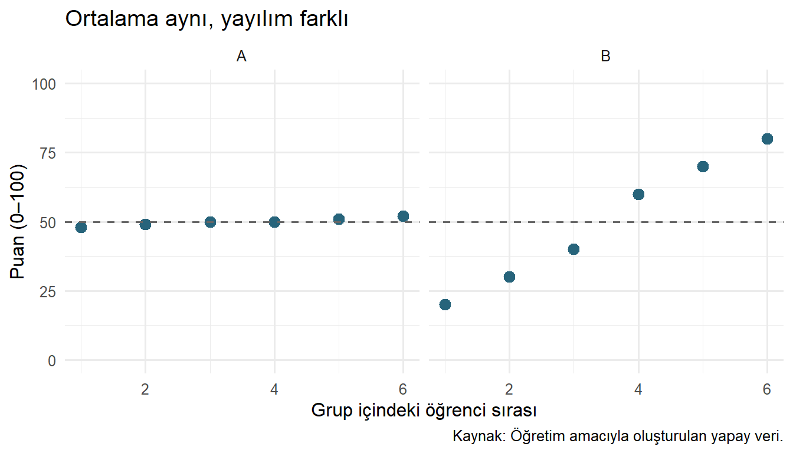
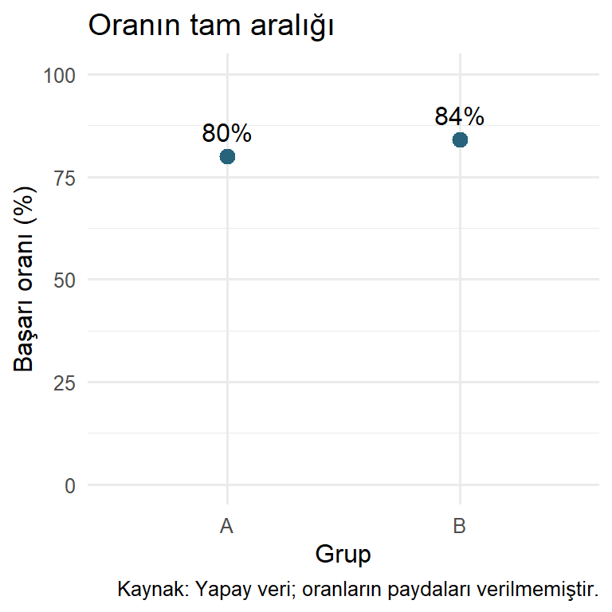
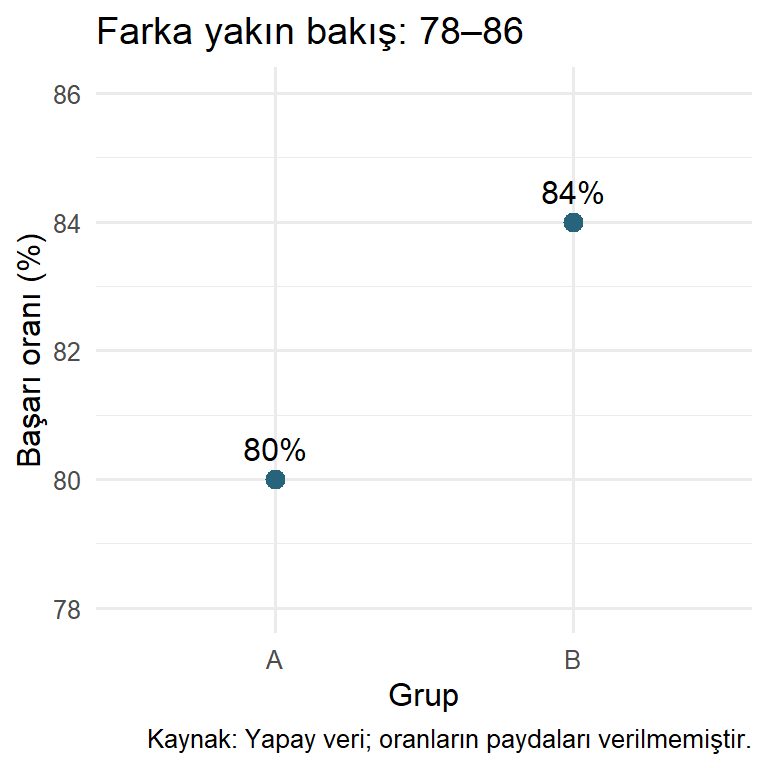
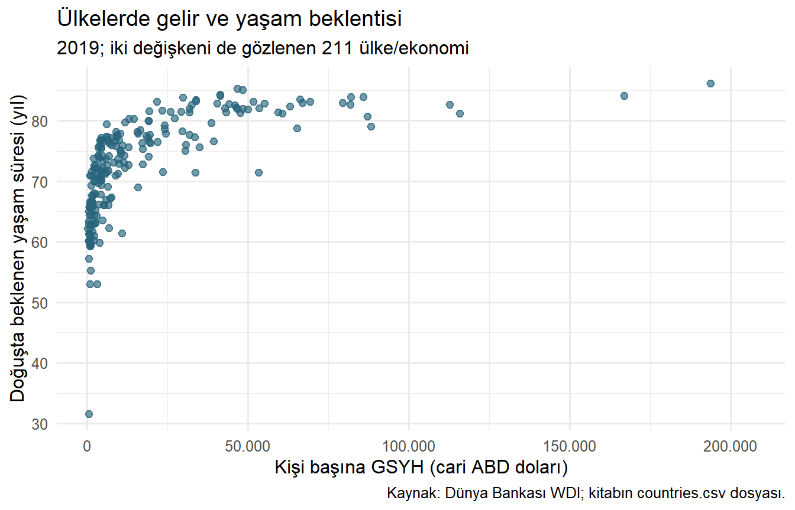
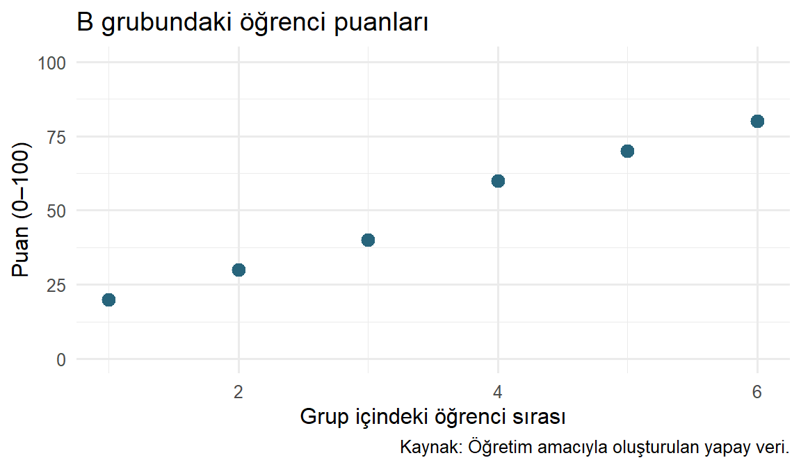

Bir veri tablosunda yüzlerce sayı bulunabilir. Ortalama, medyan ve standart sapma bu sayıları özetler; ancak dağılımın biçimini, değişkenler arasındaki ilişkinin yönünü veya sıra dışı bir gözlemi her zaman görünür kılmaz. Grafikler, bu özellikleri incelemek ve başkalarına anlatmak için farklı bir temsil sunar.
Veri görselleştirme, verideki değerlerin ve ilişkilerin konum, uzunluk, renk ve şekil gibi görsel özelliklerle temsil edilmesidir. İyi bir grafik, bir araştırma sorusuna cevap aramamızı kolaylaştırır. Bunun için yalnızca çizim komutunun doğru çalışması yetmez. Kullanılan veri, seçilen grafik ve yapılan yorum da birbiriyle uyumlu olmalıdır.
Part II’de veriyi seçmeyi, gruplamayı ve dönüştürmeyi öğrendik. Bölüm 14 bölümünde bu işlemlerin analiz amacına göre gerekçelendirilmesi gerektiğini gördük. Şimdi aynı yaklaşımı grafiklere taşıyacağız: Önce hangi soruyu soruyoruz, sonra bu soruyu hangi görsel temsil yardımıyla inceleyebiliriz?
21.1 Öğrenme Hedefleri ve Ön Koşullar
Bu bölümün sonunda:
keşif amacıyla hazırlanan grafiklerle iletişim amacıyla hazırlanan grafikleri ayırabilecek,
analiz birimini ve değişken türlerini grafik seçimiyle ilişkilendirebilecek,
aynı özet istatistiklerin neden farklı veri yapılarını gizleyebildiğini açıklayabilecek,
temel bir grafiği R ile üretip kapsamı ve sınırlılıklarıyla yorumlayabilecek,
eksen, eksik veri, renk ve nedensellik kaynaklı yanıltıcı yorumları fark edebileceksiniz.
Veri çerçevesi, sütun seçimi ve temel R fonksiyonlarına aşina olmak yeterlidir. Ülke örneğinde kullanılan filter() ve select() işlemleri Bölüm 11 bölümünde açıklanmıştır. Burada ggplot2 kodlarını küçük bir başlangıç örneği olarak kullanacağız. Grafik gramerini ve sözdizimini sonraki bölümde sistematik olarak ele alacağız.
21.2 Görselleştirme Bilimsel Düşünmeye Nasıl Katkı Sağlar?
Bir araştırma çoğu zaman bir beklentiyle başlar: Gelir arttıkça yaşam beklentisi yükseliyor mu? İki grubun başarı düzeyi farklı mı? Bir göstergede zaman içinde düzenli bir değişim var mı? Grafikler bu beklentiyi veriyle karşılaştırmamıza yardım eder.
Keşifsel veri analizinde grafik, yalnızca tamamlanmış bir analizin son ürünü değildir. Yeni sorular üretmenin de aracıdır (Tukey 1977). Beklenmeyen bir kümelenme, tek bir doğrusal ilişki yerine ayrı gruplar düşünmemizi sağlayabilir. Sıra dışı bir nokta ölçüm hatasını araştırmaya yöneltebilir; fakat tek başına silme gerekçesi oluşturmaz. Bu ayrımı Bölüm 16 bölümünden hatırlayabiliriz.
Bununla birlikte grafikte görülen her örüntü araştırma sonucuna dönüşmez. Küçük örneklemlerde rastlantısal dalgalanmalar belirgin görünebilir. Çok sayıda grafik arasından yalnızca beklentimize uyanları seçmek de bulguyu olduğundan güçlü gösterebilir. Grafikle oluşturulan bir hipotez, doğrulayıcı bir iddiaya dönüştürülecekse araştırma tasarımı ve uygun istatistiksel değerlendirme gerekir (Gelman vd. 2020).
ÖnemliGrafik kanıtın bir parçasıdır
Bir grafik, gözlenen verideki örüntüyü gösterir. Örneklemin temsil gücünü, ölçümün geçerliliğini veya neden-sonuç ilişkisini tek başına doğrulamaz. Görsel açıklık ile bilimsel kesinlik aynı şey değildir.
21.2.1 Keşfetmek ve İletmek
Keşif amaçlı görselleştirmede farklı gösterimleri deneriz. Dağılımın çarpık olup olmadığını, eksiklerin nerede yoğunlaştığını veya ilişkinin gruplara göre değişip değişmediğini araştırırız. İlk grafik kusursuz görünmek zorunda değildir; yeni bir soruya yol açması değerlidir.
İletişim amaçlı görselleştirmede belirli bir sorunun cevabını okuyucunun izleyebileceği biçimde sunarız. Başlık, birimler, veri kaynağı ve gerekli açıklamalar bu aşamada önem kazanır. Ancak mesajı belirginleştirmek için karşıt gözlemleri gizlemek kabul edilebilir bir sadeleştirme değildir.
Örneğin bir araştırmacı gelir dağılımını keşfederken birkaç farklı histogram aralığı deneyebilir. Son raporda ise seçtiği gösterimin gerekçesini ve hangi gözlemleri içerdiğini açıklamalıdır. İki amaç birbirini tamamlar: keşif anlamayı, iletişim bu anlayışı paylaşmayı destekler.
21.3 Önce Soru, Sonra Grafik
Grafik seçmeden önce dört bilgiyi netleştirelim:
Analiz birimi: Her satır bir öğrenciyi mi, ülkeyi mi, yoksa ülke-yılı mı temsil ediyor?
Değişken türü: Sayısal değer, kategori veya zaman bilgisi mi kullanıyoruz?
Karşılaştırma: Dağılımı, grupları, ilişkiyi veya zaman içindeki değişimi mi inceliyoruz?
Kapsam: Hangi dönem ve gözlemler grafiğe giriyor; hangileri dışarıda kalıyor?
Sayılardan oluşan her sütun nicel ölçüm değildir. Örneğin ülke kodları veya 1, 2, 3 ile kodlanmış bölgeler kategori gösterebilir. Buna karşılık sıralı bir eğitim düzeyi değişkeninde kategorilerin doğal sırası korunmalıdır.
Soru
Veri yapısı
Başlangıç için uygun grafik
Özellikle kontrol edilecek nokta
Değerler nasıl dağılıyor?
Bir sayısal değişken
Histogram; küçük veride nokta grafiği
Aralık seçimi, örneklem büyüklüğü, uç değerler
Kategoriler arasında ne kadar fark var?
Kategori ve sayısal özet
Sütun veya nokta grafiği
Sayım ile ortalamanın ayrılması, birimler
İki sayısal değişken birlikte nasıl değişiyor?
İki sayısal değişken
Saçılım grafiği
Örtüşen noktalar, gruplar, nedensellik
Zaman içinde ne değişiyor?
Zaman ve sayısal değişken
Çizgi grafiği
Kronolojik sıra, eksik dönemler, karşılaştırılabilir ölçüm
Bir dağılım gruplara göre farklı mı?
Kategori ve sayısal gözlemler
Kutu grafiği ve gerektiğinde ham noktalar
Grup büyüklükleri ve gizlenen dağılım ayrıntıları
Bu eşleştirmeler başlangıç rehberidir; her sorunun tek doğru grafiği yoktur. Kesin değerleri okumak amaçlanıyorsa tablo, genel örüntüyü görmek amaçlanıyorsa grafik daha uygun olabilir. İkisini birlikte sunmak da mümkündür.
21.4 Aynı Özet, Farklı Veri: Küçük Bir Deney
Sorumuz: İki grubun ortalaması aynıysa gözlemlerin yapısı da benzer midir?
Aşağıdaki yapay veride her satır bir öğrencidir. İki grupta da altı öğrenci vardır. Veriler yalnızca öğretim amacıyla oluşturulmuştur; gerçek bir okul veya araştırma hakkında bilgi içermez.
library(ggplot2)# İki gruptaki öğrencilerin puanlarını aynı tabloda tutuyoruz.puanlar <-data.frame(grup =rep(c("A", "B"), each =6),ogrenci =rep(1:6, times =2),puan =c(48, 49, 50, 50, 51, 52, 20, 30, 40, 60, 70, 80))# Her grubun merkezini ve yayılımını birlikte hesaplıyoruz.aggregate(puan ~ grup, data = puanlar, FUN = mean)
aggregate(puan ~ grup, data = puanlar, FUN = range)
Her iki grubun ortalaması 50’dir. Ancak A grubunun puanları 48–52, B grubunun puanları 20–80 aralığındadır. Ortalama, tek başına bu yayılım farkını anlatmaz. Aralık da yalnızca en küçük ve en büyük değeri özetler; aradaki gözlemleri görmek için grafiğe bakalım.
Küçük veri setinde her öğrenciyi ayrı bir noktayla gösterebiliriz. Yatay eksendeki sıra yalnızca grup içindeki öğrenciyi ayırt eder; zaman veya başarı sıralaması değildir. Grupları ayrı panellerde, aynı dikey ölçekle göstermek karşılaştırmayı kolaylaştırır.
# aes() sütunları eksenlere eşler; geom_point() gözlemleri çizer.ggplot(puanlar, aes(x = ogrenci, y = puan)) +geom_point(size =3, colour ="#27647B") +geom_hline(yintercept =50, linetype ="dashed", colour ="grey40") +facet_wrap(~ grup) +scale_y_continuous(limits =c(0, 100)) +labs(title ="Ortalama aynı, yayılım farklı",x ="Grup içindeki öğrenci sırası",y ="Puan (0–100)",caption ="Kaynak: Öğretim amacıyla oluşturulan yapay veri." ) +theme_minimal(base_size =12)

Şekil 21.1: Ortalama aynı olsa da puanların yayılımı farklıdır. Her nokta bir öğrenciyi temsil eder.
geom_hline() ortak ortalamayı kesikli çizgiyle gösterir. facet_wrap() her grubu ayrı panelde sunar. Bu iki işlevin ayrıntılarını ilerleyen bölümlerde göreceğiz. Burada önemli olan, noktalar ve ortak ölçek sayesinde aynı ortalamanın farklı gözlem yapılarını gizleyebildiğini fark etmektir.
Şekil 21.1 içinde A grubunun daha dar bir aralıkta toplandığını görüyoruz. Bununla birlikte “A grubunun eğitim yöntemi daha iyidir” sonucuna ulaşamayız. Grupların nasıl oluşturulduğunu, ölçüm koşullarını veya başlangıç düzeylerini bilmiyoruz. Bu altışar yapay gözlem, bütün öğrenciler hakkında genelleme yapmak için de kullanılamaz.
21.5 Görsel Algı: Değerleri Nasıl Okuyoruz?
Grafikte sayıların kendisini değil, sayıları temsil eden görsel özellikleri karşılaştırırız. Noktanın konumu, sütunun uzunluğu veya rengin tonu bu nedenle birer tasarım kararıdır. Grafik grameri yaklaşımı da veri değişkenleriyle bu görsel özellikler arasında kurulan eşlemeleri temel alır (Wickham 2016).
Aynı değerleri birinde nokta konumuyla, diğerinde daire alanıyla göstermek okuyucudan farklı karşılaştırmalar ister. Kesin büyüklük farkları önemliyse ortak eksendeki konumları karşılaştırmak uygun bir başlangıçtır. Uzun kategori adlarında yatay düzen tercih etmek de etiketleri okumayı kolaylaştırabilir (Wilke 2019, böl. 6).
Renk ise anlamlı bir ayrım taşımalıdır. Her gözleme farklı renk vermek, özellikle çok sayıda kategori olduğunda, lejant ile noktalar arasında yorucu bir eşleştirme gerektirir. Gereksiz renkleri azaltmak ve gerektiğinde doğrudan etiket kullanmak okumayı kolaylaştırabilir (Wilke 2019, böl. 19).
Erişilebilirlik için renk tek başına bilgi taşımamalıdır. Grup adları, nokta şekilleri veya çizgi türleri de kullanılabilir. Alternatif metin, görselin temel mesajını ekran okuyucu kullanan kişilere aktarır; ayrıntılı sayılar gerekliyse erişilebilir bir tablo da sunulmalıdır.
21.6 Eksen Seçimi Yorumu Nasıl Değiştirir?
Sorumuz: İki başarı oranı arasındaki farkı hangi ölçekte okuyoruz?
Aşağıdaki yapay veride oranlar yüzde 80 ve yüzde 84’tür. Tam aralığı ve daraltılmış aralığı aynı grafik üzerinde yan yana karşılaştıracağız. Farkı incelerken nokta grafiği kullanıyoruz; çünkü burada büyüklüğü sütun uzunluğuyla kodlamıyoruz.
basari <-data.frame(grup =c("A", "B"),oran =c(80, 84))# Aynı grafiği iki farklı eksen aralığında göstereceğiz.eksen_grafigi <-ggplot(basari, aes(x = grup, y = oran)) +geom_point(size =3, colour ="#27647B") +geom_text(aes(label =paste0(oran, "%")), vjust =-0.8) +labs(x ="Grup", y ="Başarı oranı (%)",caption ="Kaynak: Yapay veri; oranların paydaları verilmemiştir." ) +theme_minimal(base_size =12)
Grafiği bir nesneye atamak, aynı veri ve etiketleri koruyarak farklı gösterimler üretmemizi sağlar. Noktaların üzerindeki etiketler de ölçek değişse bile gerçek değerlerin okunmasını sağlar.
eksen_grafigi +coord_cartesian(ylim =c(0, 100)) +labs(title ="Oranın tam aralığı")eksen_grafigi +coord_cartesian(ylim =c(78, 86)) +labs(title ="Farka yakın bakış: 78–86")

(a) Oranın tam aralığı

(b) 78–86 aralığına yakın bakış
Şekil 21.2: Aynı yüzde 80 ve yüzde 84 değerleri iki farklı eksen aralığında. Dar aralık farkı görsel olarak belirginleştirir.
coord_cartesian() görüntülenen aralığı değiştirir. Şekil 21.2 içindeki ikinci grafik dört yüzde puanlık farkı daha belirgin gösterir. A grubuna göre göreli artış ise (84 - 80) / 80 * 100, yani yüzde 5’tir. Bu iki ifade birbirinin yerine kullanılmamalıdır.
Dar eksen, nokta ve çizgi grafiklerinde küçük değişimleri incelemek için yararlı olabilir; eksen aralığı açıkça gösterilmeli ve farkın önemi abartılmamalıdır. Buna karşılık doğrusal ölçekte büyüklüğü sütun uzunluğuyla gösterdiğimizde sıfır başlangıcı korunmalıdır. Kesilmiş sütunlar değerlerin oranıyla uzunlukların oranını birbirinden koparır (Wilke 2019, böl. 17).
DikkatFarkın görünmesi, farkın anlamlı olması değildir
Yüzde 80 ve yüzde 84’ün kaç kişiden hesaplandığını bilmiyoruz. Paydalar, araştırma tasarımı ve belirsizlik bilgisi olmadan istatistiksel anlamlılık veya eğitim açısından önemli bir iyileşme iddia edemeyiz.
21.7 Gerçek Veriye Geçiş: Ülkelerde Gelir ve Yaşam Beklentisi
Sorumuz: 2019 yılında kişi başına GSYH ile doğuşta beklenen yaşam süresi arasında nasıl bir örüntü vardır?
Burada her gözlem bir ülke veya ekonomidir. İki sayısal değişken arasındaki ilişkiyi inceleyeceğimiz için saçılım grafiğini seçeceğiz. Ülke düzeyindeki değerleri bireylerin geliri ve yaşam süresi olarak yorumlamayacağız.
Kitabın ortak countries.csv dosyası, Dünya Bankası World Development Indicators verilerinden hazırlanmış 2019 kesitidir (World Bank 2026). GSYH değişkeni kişi başına cari ABD doları, yaşam beklentisi yıl birimindedir. Bu örnek zaman içinde reel gelir değişimini ölçmez.
# Dosya yolu kitap projesinin kök dizinine göredir.countries <- readr::read_csv("data/countries.csv", show_col_types =FALSE)# Önce yıl, eksiklik ve kullanılabilir gözlem sayısını görüyoruz.veri_kontrolu <-data.frame(toplam =nrow(countries),eksik_gelir =sum(is.na(countries$gdp_per_capita_usd)),eksik_yasam =sum(is.na(countries$life_expectancy_total)))veri_kontrolu
sort(unique(countries$year))
[1] 2019
# Yalnızca bu iki değişkeni gözlenen 2019 kayıtlarını seçiyoruz.iliski <- countries |> dplyr::filter( year ==2019,!is.na(gdp_per_capita_usd),!is.na(life_expectancy_total) ) |> dplyr::select(country_code, gdp_per_capita_usd, life_expectancy_total)nrow(iliski)
[1] 211
Mevcut dosyada 217 ülke/ekonomi vardır. Gelir değeri eksik olan 6 kayıt bu grafiğe giremez; yaşam beklentisinde eksik yoktur. Böylece grafik 211 gözlemi gösterir. Eksikleri sıfıra çevirmedik veya tahmin ederek doldurmadık. Dışlanan ülkeler diğerlerinden sistematik biçimde farklıysa, gözlenen ilişki bütün ülkeleri aynı biçimde temsil etmeyebilir.
ggplot(iliski, aes(x = gdp_per_capita_usd, y = life_expectancy_total)) +geom_point(alpha =0.65, size =2, colour ="#27647B") +scale_x_continuous(labels = scales::label_number(big.mark =".", decimal.mark =","),expand =expansion(mult =c(0.05, 0.12)) ) +labs(title ="Ülkelerde gelir ve yaşam beklentisi",subtitle ="2019; iki değişkeni de gözlenen 211 ülke/ekonomi",x ="Kişi başına GSYH (cari ABD doları)",y ="Doğuşta beklenen yaşam süresi (yıl)",caption ="Kaynak: Dünya Bankası WDI; kitabın countries.csv dosyası." ) +theme_minimal(base_size =12)

Şekil 21.3: 2019 yılında gözlenen kişi başına gelir ve yaşam beklentisi. Her nokta bir ülke veya ekonomidir; eksik gelirli altı kayıt dışarıda bırakılmıştır.
alpha noktaları kısmen saydamlaştırır; üst üste gelen gözlemleri fark etmeyi kolaylaştırır. Yine de bütün örtüşmeleri çözmez. Şekil 21.3 içinde düşük gelirli gözlemler solda sıkışmıştır. İlerleyen bölümlerde logaritmik eksenin bu bölgeyi nasıl görünür kıldığını ve yorumu nasıl değiştirdiğini inceleyeceğiz.
Grafikte genel olarak gelir yükseldikçe yaşam beklentisinin de yüksek olduğu bir örüntü görüyoruz. İlişki kusursuz değildir ve düz bir çizgi boyunca ilerlemez. Benzer gelir düzeylerinde farklı yaşam beklentileri bulunur. Bu nedenle yalnızca tek bir ortalama veya doğrusal ilişki ölçüsüyle yetinmek verinin bazı özelliklerini gizleyebilir.
Bu grafik, gelirin yaşam beklentisini tek başına belirlediğini göstermez. Sağlık hizmetleri, eğitim, tarihsel koşullar ve başka etkenler iki değişkenle de ilişkili olabilir. Ülkeler arasındaki ilişki, aynı ülke içindeki bireyler arasında aynı büyüklükte bir ilişki bulunduğunu da kanıtlamaz. Ayrıca her ülke bir noktadır; nüfusla ağırlıklandırılmış bir dünya nüfusu analizi yapılmamıştır (Gelman vd. 2020).
21.8 Grafiklerden Karara Geçerken
Grafikler, hangi grubun daha yakından inceleneceğini veya hangi verinin kontrol edileceğini belirlemeye yardım eder. Karar vermek için ise görsel örüntüyü maliyet, araştırma tasarımı, belirsizlik ve alan bilgisiyle birlikte değerlendirmek gerekir.
Örneğin iki okulun başarı oranını karşılaştırırken öğrenci sayıları ve öğrencilerin başlangıç koşulları bilinmeden kaynak dağıtımı kararı vermek yanıltıcı olabilir. Bir ülkenin noktasının genel örüntüden uzak olması da doğrudan politika başarısızlığı anlamına gelmez; veri tanımları ve ülke koşulları araştırılmalıdır.
Bir grafiği değerlendirirken şu soruları soralım:
Başlık, grafiğin gerçekten gösterdiği bilgiyi mi söylüyor?
Her nokta veya sütun neyi temsil ediyor?
Birimler, dönem, veri kaynağı ve kapsam açık mı?
Hangi gözlemler dışarıda bırakılmış; neden?
Ölçek, renk veya seçilen dönem belirli bir izlenimi güçlendiriyor mu?
Toplulaştırma grup içindeki farklılıkları gizliyor mu?
Verinin desteklemediği bir nedensellik veya kesinlik iddiası var mı?
21.9 Sık Yapılan Hatalar
Soru belirlemeden grafik seçmek. Bir grafiği yalnızca ilgi çekici göründüğü için seçmek, asıl karşılaştırmayı zorlaştırabilir. Önce soruyu ve analiz birimini tanımlayalım.
Özetin dağılımı temsil ettiğini varsaymak. Aynı ortalama, aynı yayılım veya aynı gözlem yapısı anlamına gelmez. Küçük veride ham gözlemleri, daha büyük veride uygun dağılım grafiklerini inceleyelim.
Eksik değeri sessizce yok saymak. Çizim sırasında kaybolan gözlemler sonucu etkileyebilir. Kullanılan ve dışlanan gözlem sayılarını açıklayalım.
İlişkiyi neden-sonuç gibi okumak. Birlikte değişim, tek başına nedensellik kanıtı değildir. Araştırma tasarımını ve alternatif açıklamaları değerlendirelim.
Etiketleri ve birimleri ihmal etmek. “Gelir” ifadesi toplam mı kişi başına mı, cari mi sabit fiyatlarla mı ölçüm yapıldığını söylemez. Ölçümü eksende veya açıklamada belirtelim.
Grafiği süslerken okumayı zorlaştırmak. Gereksiz renk, üç boyut etkisi ve kalabalık etiketler karşılaştırmayı güçleştirebilir. Her görsel unsurun görevini sorgulayalım.
21.10 Egzersizler
Kolay — Amaç: Bir araştırmacının gelir değişkeni için farklı histogram aralıkları denemesi ile son rapor için tek bir grafik hazırlaması hangi iki amaca karşılık gelir?
Kolay — Seçim: Öğrencilerin puan dağılımı, bölgelerin nüfusları, gelir ile yaşam beklentisi ve aylık işsizlik oranı için birer başlangıç grafiği önerin. Her seçimi bir cümleyle gerekçelendirin.
Kolay — Özet: Yapay puan verisindeki iki grubun medyanlarını ve standart sapmalarını hesaplayın. Aynı ortalamanın neyi gizlediğini açıklayın.
Orta — Uygulama:puanlar tablosunda yalnızca B grubunu seçin. Öğrenci sırası ile puanı nokta grafiğinde gösterin. Başlık, eksen birimi ve yapay veri açıklaması ekleyin.
Orta — Eksen: Yüzde 80 ile yüzde 84 arasındaki farkı yüzde puan ve göreli yüzde değişim olarak hesaplayın. Sıfırdan başlamayan bir nokta ekseniyle sıfırdan başlamayan bir sütun ekseni neden aynı biçimde değerlendirilmez?
Orta — Eksiklik: WDI örneğinde internet kullanımı ile yaşam beklentisini incelemek istiyoruz. Yalnızca bu iki değişkeni gözlenen 2019 kayıtlarını seçip kullanılabilir ve dışlanan kayıt sayılarını bulun. Gelir eksikliği olanları da elemek gerekli mi?
Zor — Eleştiri: Gelir–yaşam beklentisi grafiği için “Geliri artırmak her ülkede yaşamı kesin olarak uzatır” başlığı öneriliyor. İddianın en az üç sorununu belirtin ve daha uygun bir başlık yazın.
Zor — Karar: İki okulun başarı oranları yüzde 80 ve yüzde 84’tür. Okulların öğrenci sayıları, başlangıç koşulları ve oranların hangi sınavdan elde edildiği verilmemiştir. Karar vericiye hangi ek bilgileri sorarsınız? Nasıl bir grafik ve açıklama önerirsiniz?
21.11 Egzersiz Çözümleri
Çözüm 1
Farklı aralıkları denemek keşif amaçlıdır; dağılımın hangi özelliklerinin kararlı olduğunu araştırırız. Son raporun grafiği iletişim amaçlıdır; seçilen gösterimin kapsamını ve gerekçesini açıklamalıyız.
Çözüm 2
Puan dağılımı için histogram; bölgelerin nüfuslarını karşılaştırmak için sütun veya nokta grafiği; iki sayısal değişkenin ilişkisi için saçılım grafiği; aylık işsizlik oranının zaman içindeki değişimi için çizgi grafiği uygundur. Puan sayısı azsa ham noktaları göstermek de iyi bir seçenektir.
Çözüm 3
aggregate(puan ~ grup, data = puanlar, FUN = median)
aggregate(puan ~ grup, data = puanlar, FUN = sd)
İki medyan da 50’dir. Örneklem standart sapmaları A için yaklaşık 1,41, B için 23,66’dır. Ortalama ve medyan aynı olsa da B grubundaki yayılım çok daha büyüktür. Bu farkın nedeni hakkında veri verilmemiştir.
Çözüm 4
b_grubu <- puanlar[puanlar$grup =="B", ]ggplot(b_grubu, aes(x = ogrenci, y = puan)) +geom_point(size =3, colour ="#27647B") +scale_y_continuous(limits =c(0, 100)) +labs(title ="B grubundaki öğrenci puanları",x ="Grup içindeki öğrenci sırası", y ="Puan (0–100)",caption ="Kaynak: Öğretim amacıyla oluşturulan yapay veri." ) +theme_minimal(base_size =12)

Şekil 21.4: B grubunun puanları: küçük veride her gözlemi ayrı görmek mümkündür.
Noktalar ayrı öğrencileri temsil eder. Aralarına çizgi eklemek zaman veya süreklilik izlenimi yaratabileceği için burada gerekli değildir.
Çözüm 5
84-80# Yüzde puan farkı
[1] 4
(84-80) /80*100# A grubuna göre göreli yüzde artış
[1] 5
Fark 4 yüzde puan; göreli artış yüzde 5’tir. Nokta grafiğinde değer konumla gösterildiği için açıkça belirtilmiş dar bir aralık kullanılabilir. Doğrusal sütun grafiğinde ise uzunluk büyüklüğü temsil eder; sıfır başlangıcını kesmek büyüklük oranlarını çarpıtır.
Çözüm 6
internet_yasam <- countries |> dplyr::filter( year ==2019,!is.na(internet_users_pct),!is.na(life_expectancy_total) ) |> dplyr::select(country_code, internet_users_pct, life_expectancy_total)c(kullanilan =nrow(internet_yasam),dislanan =sum(countries$year ==2019) -nrow(internet_yasam))
kullanilan dislanan
189 28
Mevcut veride 189 kayıt kullanılabilir, 28 kayıt dışlanır. Gelir değişkeni bu soruda kullanılmadığı için gelir eksikliği ek bir eleme nedeni değildir. Bütün sütunlara göre eksiksiz satır seçmek gereksiz gözlem kaybına yol açabilir.
Çözüm 7
Grafik gözlemsel bir kesittir; nedensel etkiyi ayırmaz. Başka değişkenler iki ölçümle de ilişkili olabilir. Ülkeler arasındaki örüntü, her ülkenin zaman içindeki değişimini veya birey düzeyindeki ilişkiyi kanıtlamaz. “Kesin” ifadesi de belirsizliği yok sayar. Uygun başlık: 2019 yılında ülkelerde kişi başına gelir ve yaşam beklentisi.
Çözüm 8
Öğrenci sayılarını, sınavın ve başarı ölçütünün aynı olup olmadığını, dönemleri, başlangıç düzeylerini, katılımı ve eksik kayıtları sormalıyız. Oranları ve paydaları açıkça etiketleyen bir nokta grafiği başlangıç olabilir. Uygun araştırma tasarımı ve hesaplama yöntemi varsa belirsizlik aralıkları da eklenebilir; mevcut bilgilerle bu aralıklar uydurulmamalıdır. Dört yüzde puanlık farkın tek başına okul kalitesini veya nedensel etkiyi göstermediği belirtilmelidir.
21.12 Bölüm Özeti
Veri görselleştirme, sayıları görsel bir temsile dönüştürerek soru sormayı, örüntüleri incelemeyi ve bulguları paylaşmayı sağlar. Grafik seçimi analiz birimine, değişken türüne ve araştırma sorusuna dayanmalıdır.
Aynı ortalamaya sahip veriler farklı yayılımlar gösterebilir. Eksen seçimi farkların görünürlüğünü değiştirir; eksik gözlemler kapsamı daraltır; gözlemsel ilişki nedensellik kanıtı değildir. Bu nedenle iyi bir grafik, doğru kod kadar açık etiketler, kaynak bilgisi ve ölçülü yorum gerektirir.
Bir sonraki bölümde ggplot2 grafik gramerini sistematik biçimde ele alacak; veri, estetik eşleme, geometri ve katmanların nasıl birlikte çalıştığını öğreneceğiz.